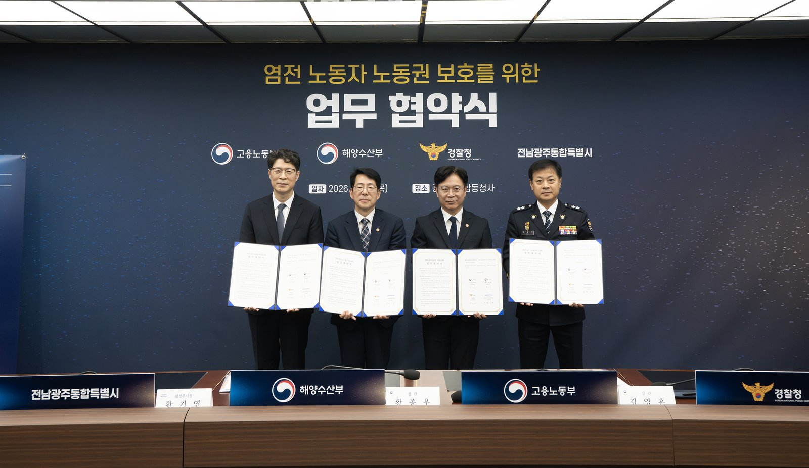

염전 765곳 전수조사, 23곳 노동법 위반·체불 5000만원
위반 의심 40곳 근로감독, 근로계약서 미작성 등 17곳
체불 4700만원 즉시 청산, 사업주 1명 형사 입건
내년부터 소금 생산 초기 고용 실태 조사 계획
AI경제저널=김갑봉 기자 | 해양수산부와 고용노동부 등 관계부처가 25일 염전 노동자 고용 실태 합동 전수조사 결과를 발표했다. 해양수산부는 지방정부, 경찰청과 함께 지난 5월부터 8월까지 국내 염전 765곳을 모두 점검했다.
고용노동부의 근로감독 대상은 이 가운데 노동관계법 위반이 의심되는 염전 40곳이다. 법 위반이 확인된 곳은 23곳으로 감독 대상의 57.5%다(AI경제저널 계산).
임금 체불 5곳에서 5000만원
임금 체불, 최저임금 위반 등이 확인된 곳은 5곳이다. 고용노동부가 이들 사업장에서 적발한 체불임금은 5000만원이다. 즉시 청산된 금액은 4700만원이다. 최저임금법은 사용자가 최저임금액 이상의 임금을 지급하도록 정한다(제6조).
형사 입건된 사업주는 시정에 응하지 않은 1명이다. 이 사업주도 입건 뒤 체불임금을 지급했다. 감독에서 적발된 체불임금은 모두 청산된 상태다.
체불 사업주들은 노동자가 임금을 한꺼번에 써 버릴 수 있어 노동자 요청으로 임금을 보관한 것이라고 주장했다. 보관했다는 임금은 감독 직후 노동자 계좌로 전액 지급된 상태다.
근로계약서 미작성 등 17곳, 임금명세서 미교부 11곳
근로계약서를 쓰지 않거나 근로조건을 밝히지 않은 곳은 17곳이다. 임금명세서를 주지 않은 곳은 11곳이다. 고용노동부는 두 위반에 시정조치를 내렸다.
근로기준법은 근로계약 때 임금과 소정근로시간 등을 명시한 서면을 주도록 정한다(제17조). 임금을 줄 때는 임금명세서를 주도록 한다(제48조 제2항). 5곳, 17곳, 11곳을 더하면 33곳으로 23곳보다 많다(AI경제저널 계산). 한 사업장이 여러 위반에 걸린 경우가 있어서다.

6월 영광 사건 뒤 업무협약
이번 합동점검은 지난 7월 맺은 업무협약의 후속 조치다. 협약 이름은 「염전노동자 노동권 보호를 위한 업무협약」이다. 체결일은 7월 30일, 장소는 광주정부합동청사다.
해양수산부에 따르면 지난 6월 영광에서 염전 노동자 폭행과 강제노동 사건이 일어났다. 관계기관은 그 직후 합동 대응체계를 꾸렸다. 협력 체계를 상시화해 노동권 침해를 근절하는 것이 협약의 목적이다.
내년부터 생산 초기 조사 계획
정부는 내년부터는 소금 생산 초기에 염전 노동자 고용 실태 조사를 해 선제적으로 대응할 계획이다. 전남광주통합특별시 등에서 연 염전 노동자 인권 침해 예방 교육은 27회, 대상은 사업주 등 약 800명이다. 정부는 이 교육을 늘릴 예정이다.
김영훈 고용노동부 장관은 "임금체불, 강제노동 등 법 위반 사항에 대해서는 무관용 원칙으로 강력하게 대응하겠다"고 밝혔다.
황종우 해양수산부 장관은 "앞으로도 인권 침해가 확인되는 경우에는 관계법령에 따라 허가 취소 등 엄정 조치하겠다"고 말했다.
참고문헌
- 고용노동부 근로감독기획과·해양수산부 어업인안전기획과 등 관계부처 합동, "염전 노동자 고용 실태 합동 전수 조사 및 노동법 위반 의심 염전 근로 감독 실시", 2026.11.25., https://www.korea.kr/briefing/pressReleaseView.do?newsId=156790687
- 해양수산부 어업인안전기획과, "염전 노동자 고용 실태 합동 전수 조사 및 노동법 위반 의심 염전 근로 감독 실시", 2026.11.25., https://www.korea.kr/briefing/pressReleaseView.do?newsId=156790682
- 해양수산부, 「해양수산부·고용노동부·경찰청·전남광주통합시, 염전노동자 노동권 보호를 위한 업무협약(MOU) 체결」(사진뉴스), 2026.07.31., https://www.mof.go.kr/doc/ko/selectDoc.do?docSeq=67727&menuSeq=381&bbsSeq=15
- 「근로기준법」 제17조·제48조(법률 제21533호, 2026.10.8. 시행), 국가법령정보센터, https://www.law.go.kr/법령/근로기준법
- 「최저임금법」 제6조(법률 제17326호, 2020.5.26. 시행), 국가법령정보센터, https://www.law.go.kr/법령/최저임금법
[사진 출처]
- [사진 1] 해양수산부
※ 이 기사는 AI 프로그램 클로드를 활용해 작성했습니다.
관련기사
- [AI 노동시장①] AI 노출 업종에서 좁아진 청년 첫 일자리
- 대리기사 단체보험 강요·등급제, 카카오·티맵 등 4개사 시정방안 제시
- 청년 많이 일하는 100곳, 장시간 노동·공짜 야근 감독 받는다
- 인천 정신재활시설 신규 종사자 기본급 낮춘 지 8개월, 세 번째 집회
저작권자 © AI경제저널 무단전재 및 재배포, AI학습 및 활용 금지